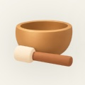
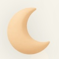

Mockup for review before any code. People with a Watch start a session exactly as they do now and get their readings after; people without one never see a gap. Readings only, no score. Part of premium, like the rest of 808. Numbers on these screens are an example session.
A small Apple Watch switch under Silence notifications, deliberately smaller than the other pills. It only appears when a Watch is paired to the phone; with no Watch paired it does not show at all.


808 reads your heart rate and stillness while you meditate. Your phone works fine without it.
An Apple Watch section at the top: which Watch, whether it's connected, a switch to stop measuring, and the same connect steps.
The session page gains a "Your body" card only when the Watch measured the session. Three readings in plain words with a small line each, and a way into the full graphs.
Readings only, no score. Part of premium. Start and end from the phone or the Watch. No Watch is never a problem and never mentioned to people without one.
A question in onboarding about owning a Watch, so 808 can offer to set it up. Parked for now, as you said.
On when your Watch has connected to 808 before and is connected now. Off otherwise, and never shown without a paired Watch.